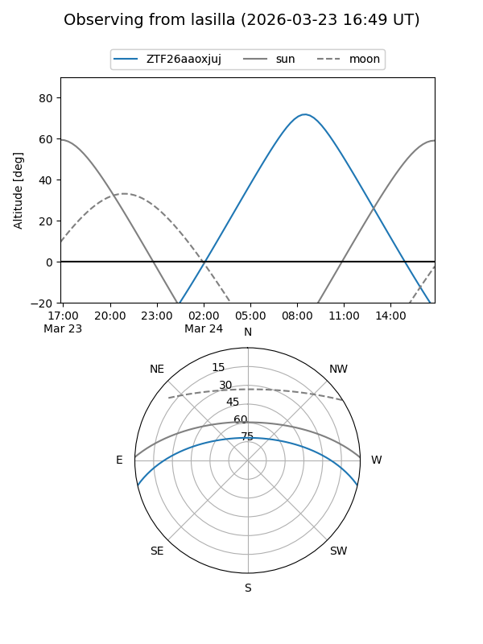
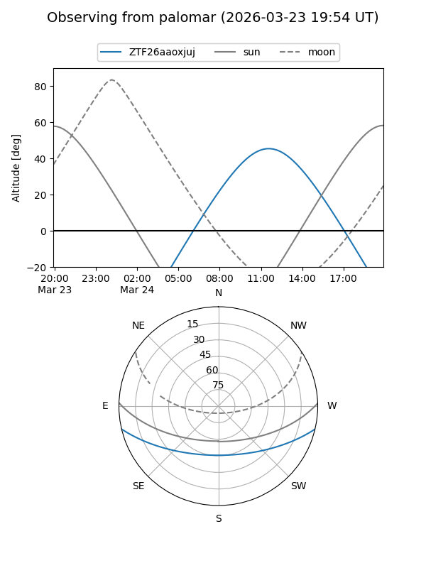

ZTF26aaoxjuj
Target ZTF26aaoxjuj at 2026-03-23 12:19
Aliases and brokers:
FINK: link
Lasair: link
ALeRCE: link
alt names
ZTF26aaoxjuj (ztf,fink_ztf)
Coordinates:
equatorial (ra, dec) = 238.2620,-11.07492
equatorial (HMS+DMS) = 15:53:02.89,-11:04:29.70
galactic (l, b) = (358.1608,+31.71211)
Flags:
Photometry:
last ztfg=16.30
1 ztfg detections
Lightcurve
Visibility


Additional plots